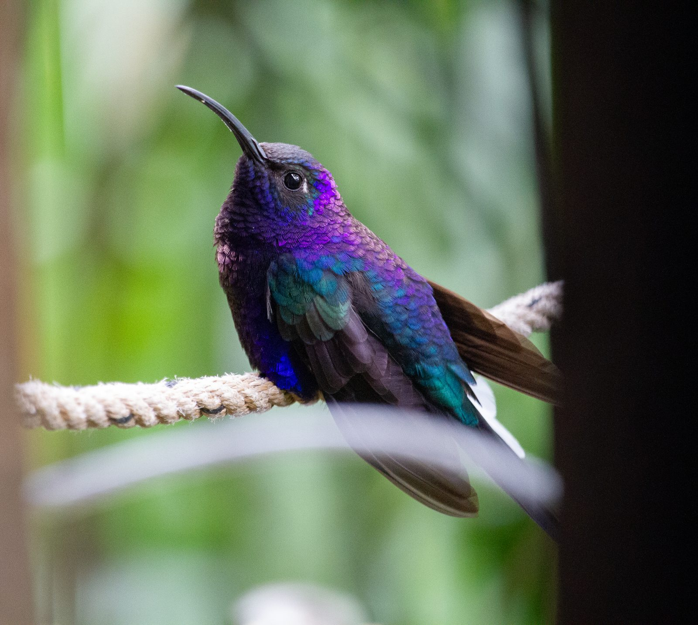

Violet Sabrewing
Campylopterus hemileucurus (Deppe, 1830)
Spanish: Fandanguero Morado
The Violet Sabrewing (Campylopterus hemileucurus) is a hummingbird in the subfamily Trochilinae (mountain gems, bees and emeralds), tribe Trochilini (emeralds). It weighs about 9.7 g and its bill is 32.7 mm long. It lives in Costa Rica, Guatemala, Honduras, Panama, Nicaragua, Belize, Mexico and El Salvador. Its IUCN Red List status is Least concern, with a decreasing population.
See it in the explorer eBird page ↗
At a glance
- Weight
- 9.7 g, about 10 paperclips
- Bill
- 32.7 mm
- Lives in
- Forest
- Moves
- Stays put all year
- Red List status
- Least concern, decreasing
Its place in the family
- Family Trochilidae hummingbirds
- Subfamily Trochilinae mountain gems, bees and emeralds
- Tribe Trochilini emeralds
- Genus Campylopterus sabrewings
Where it lives · 8 countries
- Costa Rica
- Guatemala
- Honduras
- Panama
- Nicaragua
- Belize
- Mexico
- El Salvador
Others in the genus Campylopterus
- Diamantina Sabrewing Campylopterus diamantinensis
- Rufous-breasted Sabrewing Campylopterus hyperythrus
- Outcrop Sabrewing Campylopterus calcirupicola
- Buff-breasted Sabrewing Campylopterus duidae
- Gray-breasted Sabrewing Campylopterus largipennis
- Napo Sabrewing Campylopterus villaviscensio
- Lazuline Sabrewing Campylopterus falcatus
- Santa Marta Sabrewing Campylopterus phainopeplus
- White-tailed Sabrewing Campylopterus ensipennis
Sources
Names: eBird/Clements Checklist (Cornell Lab of Ornithology). Groups: Dickinson & Remsen (2013) and McGuire et al. (2014). Weight, bill, habitat and movement: AVONET (Tobias et al. 2022, CC BY 4.0). Countries: BirdLife International DataZone, checked against eBird records via GBIF. Red List status and trend: BirdLife International, the IUCN Red List authority for birds.